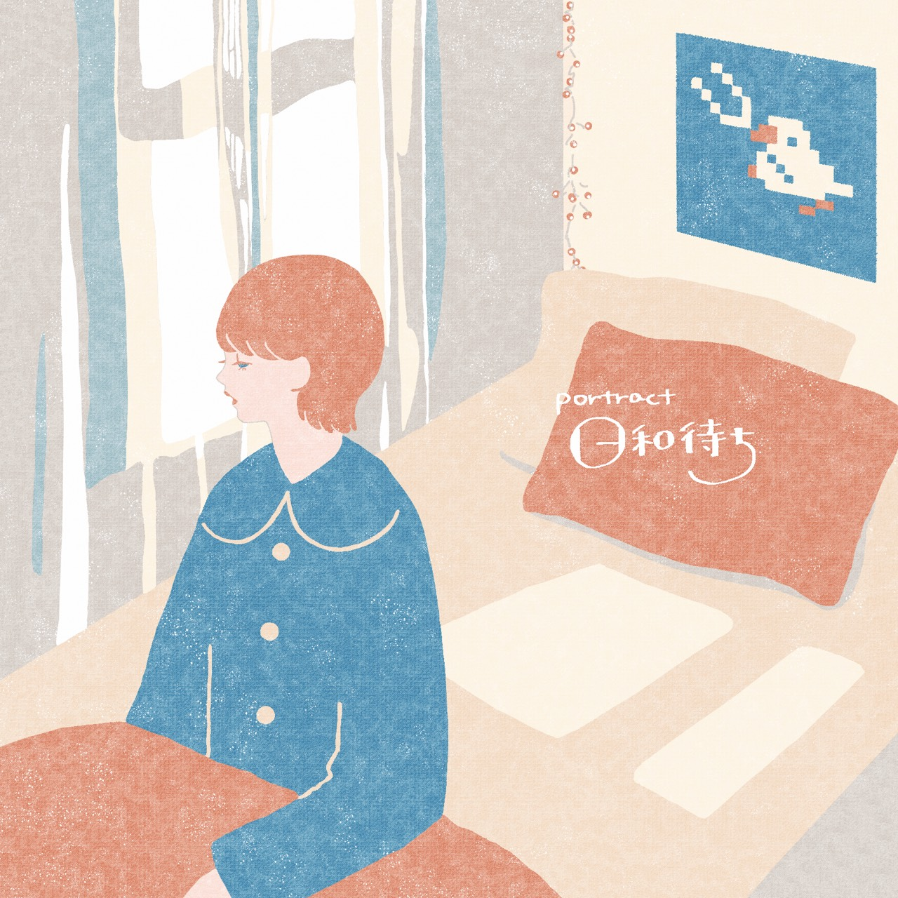

detail
- 日付：
- 2021年3月14日
- 時間：
- 12:30 開場，13:00 開演 (予定)
- アーカイブ配信期間：
- 3月14日終演後～3月28日
- 場所：
- Live & Kitchen SHINSAIBASHI 歌う魚
acts
-
第1部
- SHIRASU
- とばり
- ほっくんたっくん
- ハンバーグハンバーグ
-
第2部
How to watch?
- 本公演はツイキャスにて有料配信します
- 事前にツイキャスでのアカウント登録と、チケット購入をお済ませください
| 生配信 |
開場時間より配信が始まります。ぜひコメントなどもお寄せください。 |
| アーカイブ |
当日見れない方でもアーカイブを視聴できます。終演後2週間は何度でも見られます。 |
ツイキャスに関する詳細はこちらからご確認ください

1st mini album
日和待ち
説明
songs. 1.よいお年を
2.せんたく日和
3.怪文書
4.ずっとの光
5.＿＿人間
6.HAGUKI
ご購入の際はTwitterまたはメールからご連絡ください
links
-
- portract
- Twitter Youtube
-
- 安藤しじま
- Twitter YouTube blog
-
- みのりん
- Twitter YouTube SHOWROOM